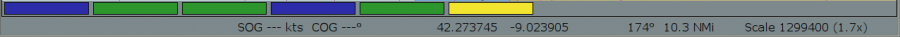
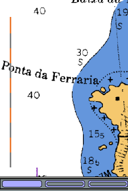

Scaling Charts


These buttons will allow you to change the scale of chart you are using, unless only CM93 charts are loaded, in which case these buttons have no effect, and are grayed out. If just a yellow bar is visible in the Chart Selection Bar, above the Status Bar, then CM93 is the only available chart for the area.
Shift to larger scale chart. Will change to next chart of greater detail, covering less area, if available, within the current view.
Shift to smaller scale chart. Will change to the next chart of less detail, covering a greater area, if available, within the current view.
Chart Bar Buttons
The charts in the Chart Bar just above the Status Bar (The User Interface) are ordered according to scale. The leftmost chart, is the largest scale chart available, and the rightmost chart is the smallest scale chart.

Above the largest scale chart is a raster chart (blue) on the far left. To the far right is CM93 (yellow), and it will always be there, if available. The green ENC vector chart, next to CM93, is the smallest scale raster/ENC chart available at the center of the display.
The scale of the displayed chart.
The chart display indicates the true scale of a particular chart at the present zoom level. Look to the far right on the bar above: “Scale 1299400 (1.7x)”.
There is also a quick reference visual indicator always present in the SW part of the display.

When the indicator is gray and orange the total length is 1 nautical mile an each segment is 1 cable. When the indicator is gray and black the total length is 10 miles and each segment is 2 miles.